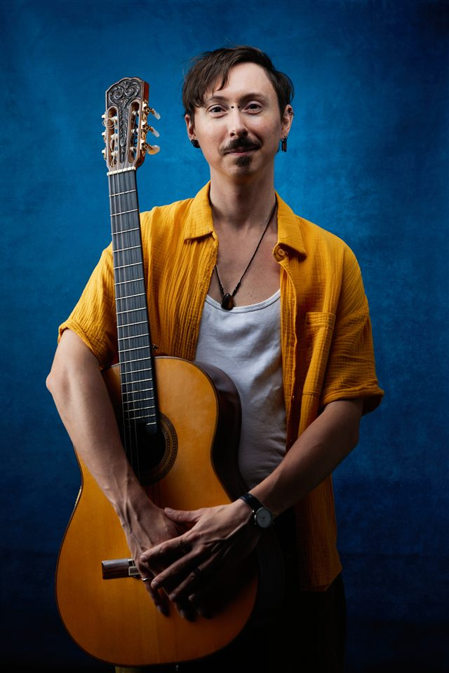

Qué es Coplario
Versión 1.0, actualizada el 5 de noviembre de 2026: 39.418 coplas y 1.831 décimas de 28 fuentes.
Un explorador de coplas tradicionales de España y América, reunidas de cancioneros, colecciones y estudios. Cada copla lleva su fuente: libro, autor, año y página del libro en que se leyó. Se puede buscar por palabras, rima, país, tema, libro y forma de la estrofa.
Quién lo hizo

Coplario fue creado por Marco Grancelli, músico nacido en Buenos Aires y apasionado del folclore sudamericano.
Está hecho con cariño y con la mera intención de acercar una herramienta a quienes, como él, son fanáticos de las coplas.
Marco en las redes: Instagram · Facebook · Música y más enlaces
Ver la copla en el libro
En cada copla, el botón "Ver en el libro" abre la imagen de la página donde está impresa, con anterior y siguiente, para poder comparar con el original.
Fuentes
| Obra | Autor o responsable | Año | Edición | Coplas | Imagen de página |
|---|---|---|---|---|---|
| Cantos populares españoles, Tomo II | Francisco Rodríguez Marín (recopilador) | 1882 | Sevilla, Francisco Álvarez y Cía. | 2.093 | sí (págs. 12 a 520) |
| Cantos populares españoles, Tomo III | Francisco Rodríguez Marín (recopilador) | 1882 | Sevilla, Francisco Álvarez y Cía. | 1.967 | sí (págs. 12 a 512) |
| Cantos populares españoles, Tomo IV | Francisco Rodríguez Marín (recopilador) | 1883 | Sevilla, Francisco Álvarez y Cía. | 1.902 | sí (págs. 11 a 545) |
| Cancionero popular de Salta | Juan Alfonso Carrizo (recopilador) | 1933 | Buenos Aires, A. Baiocco y Cía. | 6.427 | sí (págs. 8 a 709) |
| Cantares populares y literarios | Melchor de Palau (recopilador) | 1900 | Barcelona, Montaner y Simón (Biblioteca Universal) | 5.345 | sí (págs. 17 a 375) |
| Cancionero folklórico de México, Tomo 1: Coplas del amor feliz | Margit Frenk Alatorre (dirección) | 1975 | México, El Colegio de México | 2.055 | sí (págs. 52 a 426) |
| Cancionero folklórico de México, Tomo 2: Coplas del amor desdichado y otras coplas de amor | Margit Frenk Alatorre (dirección) | 1977 | México, El Colegio de México | 2.643 | sí (págs. 35 a 482) |
| Cancionero folklórico de México, Tomo 3: Coplas que no son de amor | Margit Frenk Alatorre (dirección) | 1980 | México, El Colegio de México | 2.724 | sí (págs. 28 a 407) |
| Cancionero folklórico de México, Tomo 4: Coplas varias y varias canciones | Margit Frenk Alatorre (dirección) | 1982 | México, El Colegio de México | 3.024 | sí (págs. 28 a 433) |
| Canciones y coplas populares | Jorge Isaacs (compilador) | 1985 | Bogotá, Procultura (Nueva Biblioteca Colombiana de Cultura) | 525 | sí (págs. 5 a 53) |
| Cancionero popular venezolano: cantares y corridos, galerones y glosas | José E. Machado (recopilador) | 1919 | Caracas | 734 | sí (págs. 7 a 275) |
| Poesía popular andina, Tomo 1: Venezuela, Colombia, Panamá | Instituto Andino de Artes Populares (IADAP), Convenio Andrés Bello (edición institucional) | s. f. | Quito (sede del IADAP; a verificar), IADAP | 1.583 | sí (págs. 4 a 487) |
| Poesía popular andina, Tomo 2: Ecuador, Perú, Bolivia, Chile | Instituto Andino de Artes Populares (IADAP), Convenio Andrés Bello (edición institucional) | s. f. | Quito (sede del IADAP; a verificar), IADAP | 2.237 | sí (págs. 4 a 421) |
| Cancionero popular de Violeta Parra | Violeta Parra (autora de las canciones) | 2017 | Santiago (a verificar), Consejo Nacional de la Cultura y las Artes | 66 | sí (págs. 3 a 28) |
| Coplas de Nuestra Tierra. Concursos Coplas de Nuestra Tierra UPCN 2022 | UPCN (Unión del Personal Civil de la Nación) (edición institucional) | 2022 | Buenos Aires, UPCN | 336 | sí (págs. 6 a 129) |
| Cancionero popular. Colección escogida de coplas y seguidillas, Tomo segundo: Coplas | Emilio Lafuente y Alcántara (recopilador) | 1865 | Madrid, Carlos Bailly-Baillière | 2.873 | sí (págs. 12 a 483) |
| Los americanismos en la copla popular (complemento) | Augusto Malaret (autor) | s. f. | publicado en la revista de la Universidad Pontificia Bolivariana, Medellín (a verificar) | 69 | sí (págs. 1 a 37) |
| Cancionero popular murciano antiguo | María Josefa Díez de Revenga Torres (edición, estudio preliminar y notas) | 1984 | Murcia, Academia Alfonso X el Sabio y Caja de Ahorros Provincial de Murcia (Biblioteca de Estudios Regionales) | 743 | sí (págs. 67 a 264) |
| Colección de las mejores coplas de seguidillas, tiranas y polos que se han compuesto para cantar a la guitarra, Tomo I | Don Preciso (compilador) | s. f. | España | 795 | sí (págs. 59 a 270) |
| Cuentos y poesías populares andaluces | Fernán Caballero (recopiladora) | 1859 | España | 988 | sí (págs. 208 a 387) |
| Suspiros de amor. Esmerada colección de cantares, canciones, coplas, danzas, décimas, habaneras, malagueñas, mazurcas, peteneras, romanzas, serenatas, tonadas, valses, zamacuecas | Carrasco y Jiménez (editores) (editores) | 1900 | Valparaíso, Imprenta y Librería Valparaíso de Carrasco y Jiménez (Biblioteca Distracción Popular) | 188 | sí (págs. 13 a 148) |
| Coplas populares en el Ecuador. Recopilación 2012 | Carlos Ortiz Arellano (recopilador) | 2012 | Ecuador | 808 | sí (págs. 8 a 124) |
| Coplas leonesas | José Luis Díez Pascual (recopilador) | 2024 | León | 436 | sí (págs. 5 a 93) |
| La copla popular morala: una pequeña cala en un tesoro inagotable | Alejandro Arturo González Terriza y María Angustias Nuevo Marcos (autores de la ponencia) | s. f. | España | 304 | sí (págs. 4 a 38) |
| Romances, coplas y décimas en el Pacífico y el Caribe colombiano: poética de una literatura oral en Colombia | Adrián Farid Freja De La Hoz (autor) | 2012 | Bogotá, Universidad Nacional de Colombia, Facultad de Ciencias Humanas | 117 | sí (págs. 34 a 138) |
| Performance del canto coplero: la baguala y la vidala como práctica cultural andina | Víctor Hugo Gutiérrez Fornells (autor) | 2016 | Foz do Iguaçu, Universidade Federal da Integração Latino-Americana (UNILA), ILAACH, PPG IELA | 128 | sí (págs. 40 a 190) |
| La genitalidad en la copla | José Rozo Gauta y Víctor Raúl Rojas Peña (autores del artículo) | s. f. | Colombia | 88 | sí (págs. 1 a 17) |
| Los animales en las coplas de "El Cancionero de Antioquia" | Mauricio Vélez (autor del artículo) | 1999 | Medellín, Revista Universidad EAFIT | 51 | sí (págs. 8 a 19) |
El año es el de la primera publicación de la obra o del tomo, cuando se pudo verificar; "s. f." quiere decir sin fecha visible. Los derechos de cada obra pertenecen a sus titulares.
Créditos
Selección, transcripción, revisión y diseño: Marco Grancelli, con ayuda de herramientas de inteligencia artificial (Claude, de Anthropic) para la lectura, el cotejo y la programación.
Gracias a las bibliotecas que digitalizaron estos libros y los pusieron a disposición del público.
Contacto
Para avisar un error o hacer una consulta: info@marcograncelli.com. En cada copla, el menú "Más" tiene "Avisar un error".